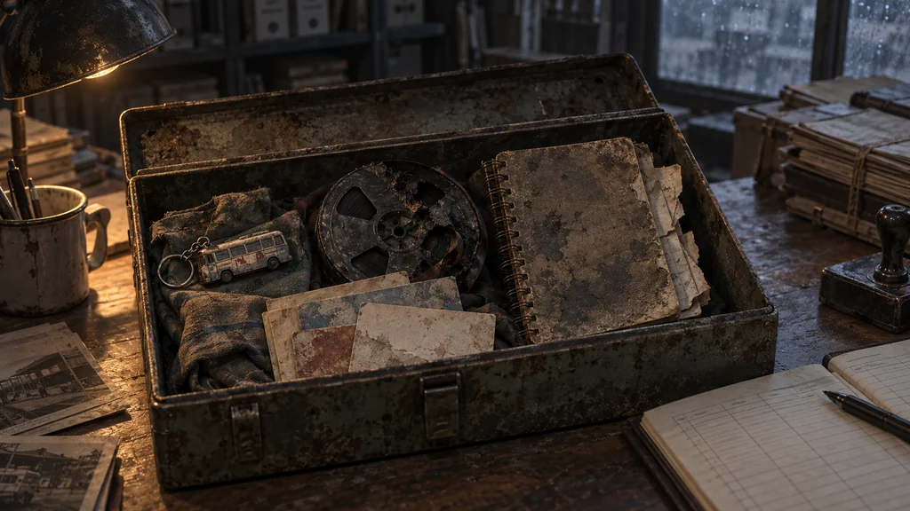
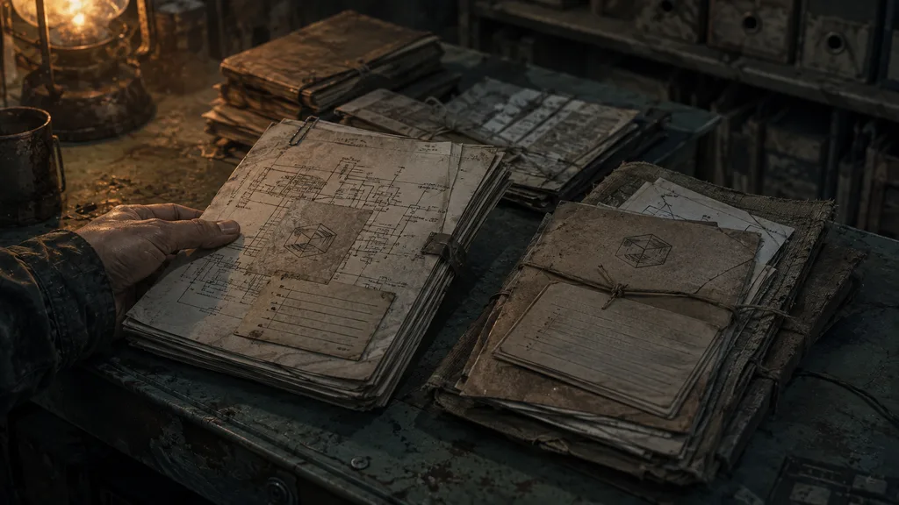

9차 이야기·그림 검증 / 전용 그림 초안
부모님이 남긴 상자.
수원 북부 교환소에서 담당자와 보관 장부를 대조한 뒤, 회수된 철제 상자를 처음 여는 장면입니다.
검토용 초안 · 사용자 승인 · 게임 소스 연결 · 실제 화면 적용·크롭 확인 대기
main_recovery_story_personal_cache
회수한 물건, 아직 비어 있는 두 장

본문: “폐버스 배차실에서 회수돼 인편으로 옮겨진 물건이었다. 담당자와 장부를 대조해 같은 상자인지 확인했다.”
수첩의 마지막 두 장은 아직 찾기 전입니다. 증언 카드는 부모님이 모은 기록이지, 주인공이 사람들을 직접 만나 확인한 증언은 아닙니다. 검증키는 달구지 배선에 연결돼 있어 상자 안에 넣지 않았습니다.
현재 게임 그림과 비교

교체 전 확인할 것
원본과 1024×576 배포본의 소품·화풍·규격은 직접 확인했습니다. 실제 게임 화면의 크롭과 Studio 창 안의 배치는 아직 확인하지 못했습니다. 이 초안의 선택은 게임 적용이나 저장 변경을 실행하지 않습니다.